The board meets Thursday, so I need a short donor briefing deck built from the quarterly donation spreadsheet that's open. Total each program's giving in the sheet first, then build a deck: a title slide naming our shelter, one slide per program with its total, and a closing slide quoting the Charity Navigator homepage's own tagline as our transparency pledge. Put speaker notes on every slide and save it in the same folder as the sheet.
THINKINGThe task has several parts: (1) total each program's giving in the sheet, (2) build a presentation deck, (3) get the Charity Navigator tagline, (4) add speaker notes, (5) save in the same folder. Let me first understand the data better. The Date column shows ### (too narrow) and I need to see all data. Let me first check the sheet's location/folder, then compute totals. I'll start by taking stock and computing program totals. I can use the terminal to inspect the file and find the folder path. Let me open a terminal.
ACTIONI'll start by understanding the data and locating the file. Let me open a terminal to inspect the spreadsheet and find its folder.
EXECUTED (pyautogui in VM)pyautogui.press("command")
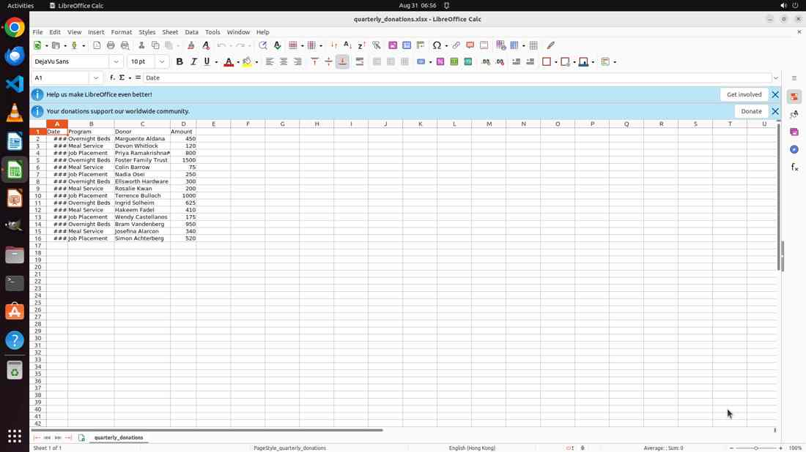
step 2 22:57:05
THINKINGThe super key didn't open anything useful. I see a terminal icon in the taskbar on the left. Let me click it to open a terminal so I can inspect the spreadsheet file, find its folder, and compute the program totals programmatically (which is more reliable than reading from the narrow columns). The terminal icon appears to be the dark square icon around (22, 451).
ACTIONLet me open the terminal application from the taskbar to inspect the file and its location.
EXECUTED (pyautogui in VM)pyautogui.click(32, 674)
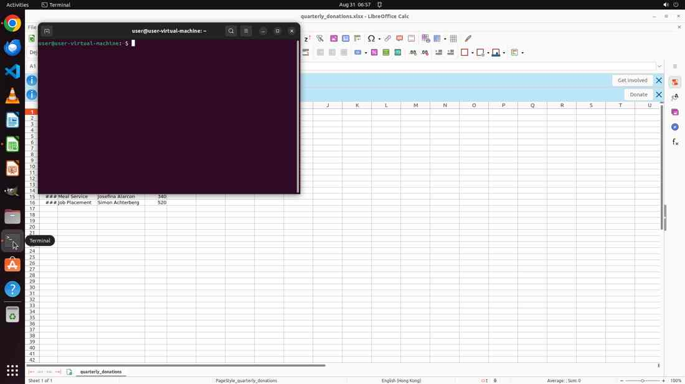
step 3 22:57:31
THINKINGTerminal is open. Let me find the file location and read its contents. I'll locate the xlsx and use python (openpyxl) to read data. First find the file.
ACTIONThe terminal is open. Let me locate the spreadsheet file and check whether Python/openpyxl is available to read the data reliably.
EXECUTED (pyautogui in VM)pyautogui.press("return")
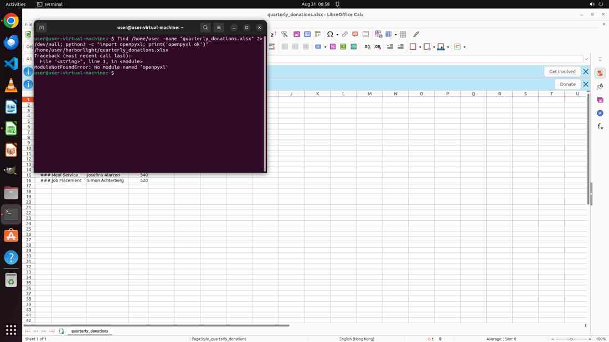
step 6 22:59:30
THINKINGKey findings:
- File location: /home/user/harborlight/quarterly_donations.xlsx. So the shelter's folder is "harborlight" — the shelter name is likely "Harborlight" (e.g., Harborlight Shelter).
- openpyxl is NOT installed.
The task says "Total each program's giving in the sheet first" — meaning I should add totals INTO the spreadsheet (the sheet). Then build the deck. The instruction is to use the application GUI, but computing totals via LibreOffice Calc formulas in the sheet is the intended approach. I should not use scripts to modify the spreadsheet. But I can read the data reliably by looking at the sheet. The columns are: Date, Program, Donor, Amount.
Programs: Overnight Beds, Meal Service, Job Placement.
Let me read amounts per program from the visible data:
Row2: Overnight Beds, 450
Row3: Meal Service, 120
Row4: Job Placement, 800
Row5: Overnight Beds, 1500
Row6: Meal Service, 75
Row7: Job Placement, 250
Row8: Overnight Beds, 300
Row9: Meal Service, 200
Row10: Job Placement, 1000
Row11: Overnight Beds, 625
Row12: Meal Service, 410
Row13: Job Placement, 175
Row14: Overnight Beds, 950
Row15: Meal Service, 340
Row16: Job Placement, 520
But the terminal window covers rows 1-13. I've only seen rows 2-16 partially in the earlier screenshot (the first full screenshot showed all 15 rows clearly). Let me use the first screenshot data which was complete and clear:
Row2: Overnight Beds, 450
Row3: Meal Service, 120
Row4: Job Placement, 800
Row5: Overnight Beds, 1500
Row6: Meal Service, 75
Row7: Job Placement, 250
Row8: Overnight Beds, 300
Row9: Meal Service, 200
Row10: Job Placement, 1000
Row11: Overnight Beds, 625
Row12: Meal Service, 410
Row13: Job Placement, 175
Row14: Overnight Beds, 950
Row15: Meal Service, 340
Row16: Job Placement, 520
Totals:
Overnight Beds: 450+1500+300+625+950 = 3825
Meal Service: 120+75+200+410+340 = 1145
Job Placement: 800+250+1000+175+520 = 2745
Total all = 3825+1145+2745 = 7715
Rather than rely on my reading, I should compute the totals in the sheet itself using SUMIF formulas, which the task explicitly asks ("Total each program's giving in the sheet first"). That's the robust approach — I'll add a small totals block in the Calc sheet using SUMIF. This also satisfies "in the sheet".
Now the deck: I need to build a presentation. The task says build a deck with title slide, one slide per program, closing slide. This is a PowerPoint presentation. The natural tool is LibreOffice Impress. I should build it in Impress GUI.
For the closing slide I need Charity Navigator's homepage tagline. I should verify it by visiting charitynavigator.org. The known tagline is "We make it easy to give." Actually the tagline on Charity Navigator's homepage — their mission statement. Let me recall: Charity Navigator's tagline is "Find Your Perfect Charity" or "We help you find and fund high-performing charities." The actual homepage tagline... I should verify by browsing. Their slogan: "Charity Navigator: The most trusted charity evaluator" — no. Let me actually check the site to be accurate. I'll use Chrome.
Actually, the well-known tagline on Charity Navigator homepage is "Find a Great Charity" / their hero text. I really should verify online. Let me plan:
1. First, add totals to the Calc sheet (SUMIF formulas).
2. Open Charity Navigator in Chrome to get the exact tagline.
3. Build the Impress deck.
Let me also confirm the shelter name. The folder is "harborlight". A reasonable shelter name: "Harborlight Shelter". I'll use "Harborlight Shelter". That's a reasonable inference from the folder name. I'll name the title slide "Harborlight Shelter — Quarterly Donor Briefing".
Let me proceed. First the totals in the sheet. I'll close/move terminal or just go to Calc. Actually I can keep the terminal. Let me click on the Calc window. But terminal covers the sheet. Let me first do the Charity Navigator lookup since that requires browsing and is the riskiest item (need exact tagline). Actually, let me do the sheet totals first while data is fresh, then browse, then build deck.
Order:
1. Calc: add SUMIF totals block and save the xlsx.
2. Chrome: get tagline.
3. Impress: build deck with notes, save as .pptx (or .odp?) "in the same folder as the sheet" = /home/user/harborlight/. The task says "save it in the same folder as the sheet" - a deck. Format unspecified. I'll save as .pptx to be a "deck". Actually to be safe and native, .odp. Hmm "deck" typically = presentation. I'll use .pptx for broad compatibility. Let me use .pptx.
Let me start with the sheet totals. Click on Calc window. I'll click on a visible Calc area (right side) to focus, then use Name Box to go to F1.
Actually the terminal window is on top-left. I'll click on the Calc title bar area or the visible grid. Let me click on the Name Box. But it's hidden behind terminal. Let me click on the visible Calc grid area first (e.g., cell area at right), then the terminal may lose focus but still overlap. Better: move terminal or minimize. Let me just click on the Calc window's visible portion (e.g., column J area) to focus Calc, then use keyboard Name Box navigation. The Name box is at top-left, covered by terminal. I could press F5? No. I can use Ctrl+... Actually clicking a cell then typing a formula is fine. I'll add totals in F/G columns near the data.
Let me minimize the terminal to see the whole sheet. Click minimize button of terminal at (491,57).
ACTIONI found the key facts: the file is at `/home/user/harborlight/quarterly_donations.xlsx` (so the shelter is "Harborlight") and openpyxl isn't installed, so I'll do the totals directly in the Calc sheet. Let me minimize the terminal to work in the spreadsheet.
EXECUTED (pyautogui in VM)pyautogui.click(734, 83)
step 7 23:00:30
THINKINGNow I can see the full sheet. Let me verify the data:
Row2: Overnight Beds, 450
Row3: Meal Service, 120
Row4: Job Placement, 800
Row5: Overnight Beds, 1500
Row6: Meal Service, 75
Row7: Job Placement, 250
Row8: Overnight Beds, 300
Row9: Meal Service, 200
Row10: Job Placement, 1000
Row11: Overnight Beds, 625
Row12: Meal Service, 410
Row13: Job Placement, 175
Row14: Overnight Beds, 950
Row15: Meal Service, 340
Row16: Job Placement, 520
Now I'll add a totals block. I'll put it starting at column F (to the right of the data). Let me place:
F1: "Program Total" (header) — actually let me create a clean block. I'll use F and G columns.
F1: "Program"
G1: "Total"
F2: "Overnight Beds", G2: =SUMIF(B2:B16,F2,D2:D16)
F3: "Meal Service", G3: =SUMIF(B2:B16,F3,D2:D16)
F4: "Job Placement", G4: =SUMIF(B2:B16,F4,D2:D16)
Using SUMIF referencing F column for criteria keeps it robust. Let me type these into cells. I'll click F1 first via Name Box. Let me use the Name Box: click it, type F1, Enter, then type the values across.
I'll batch: click Name Box, type F1, Enter, then type "Program\tTotal\t\nOvernight Beds\t=SUMIF(...)\n..." — but Tab moves right, Enter moves down to start column? In Calc, after Tab then Enter returns to the first column of the entry and moves down. Actually the behavior: when you type with Tab to move right and then press Enter, the cursor returns to the column where you started and one row down. That works for a block entry. Let me use that.
Let me build the typed sequence:
Start at F1.
"Program" Tab "Total" Enter
"Overnight Beds" Tab "=SUMIF($B$2:$B$16,F2,$D$2:$D$16)" Enter
"Meal Service" Tab "=SUMIF($B$2:$B$16,F3,$D$2:$D$16)" Enter
"Job Placement" Tab "=SUMIF($B$2:$B$16,F4,$D$2:$D$16)" Enter
Wait, after "Program" Tab to G1, "Total" Enter -> goes to F2. Good.
Then F2 "Overnight Beds", Tab to G2 formula, Enter -> F3.
F3 "Meal Service", Tab G3, Enter -> F4.
F4 "Job Placement", Tab G4, Enter.
Let me do it. First click Name Box and navigate to F1.
ACTIONI can see all the data. The three programs are Overnight Beds, Meal Service, and Job Placement. I'll add a totals block in columns F–G using SUMIF formulas so the totals are computed directly in the sheet.
EXECUTED (pyautogui in VM)pyautogui.click(142, 183)
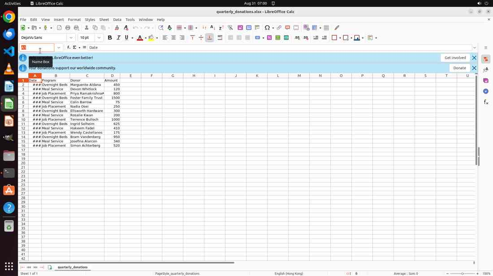
step 8 23:01:24
THINKINGName Box is active (shows A1 selected). Let me type F1 and Enter to navigate, then type the block. I'll batch the whole entry using Tab and Enter navigation.
ACTIONThe Name Box is active. I'll navigate to F1 and enter the totals block in one batch.
TOOL CALL<tool_call>
<function=computer_use>
<parameter=action>
type
</parameter>
<parameter=text>
F1
</parameter>
</function>
</tool_call>
EXECUTED (pyautogui in VM)pyautogui.typewrite("F1")
step 9 23:02:27
THINKINGThe Name Box shows "F1" but the Enter may not have registered as navigation yet — the box still shows F1 and formula bar still shows "Date" (A1 content). It seems the type put "F1\n" but the cursor is still in the Name Box (it says "Select Cell" tooltip). The newline in type may have been treated as Enter. The formula bar still shows Date which is A1. Let me press Enter to confirm navigation.
EXECUTED (pyautogui in VM)pyautogui.press("return")
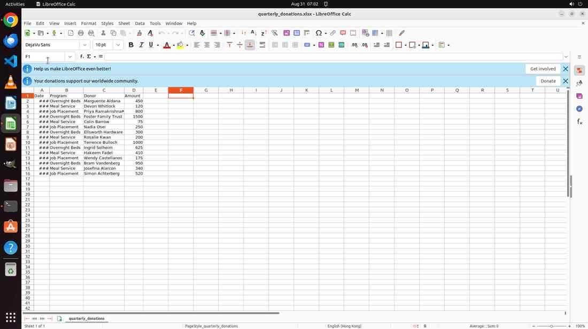
step 10 23:03:15
THINKINGNow F1 is selected (Name Box shows F1, cell F1 highlighted). Now I'll type the totals block. Using Tab to move right and Enter to move down to start column. Let me type the whole block.
ACTIONNow F1 is selected. I'll type the full totals block using Tab/Enter navigation.
TOOL CALL<tool_call>
<function=computer_use>
<parameter=action>
type
</parameter>
<parameter=text>
Program Total
Overnight Beds =SUMIF($B$2:$B$16,F2,$D$2:$D$16)
Meal Service =SUMIF($B$2:$B$16,F3,$D$2:$D$16)
Job Placement =SUMIF($B$2:$B$16,F4,$D$2:$D$16)
</parameter>
</function>
</tool_call>
EXECUTED (pyautogui in VM)pyautogui.typewrite("Program\tTotal\nOvernight Beds\t=SUMIF($B$2:$B$16,F2,$D$2:$D$16)\nMeal Service\t=SUMIF($B$2:$B$16,F3,$D$2:$D$16)\nJob Placement\t=SUMIF($B$2:$B$16,F4,$D$2:$D$16)")
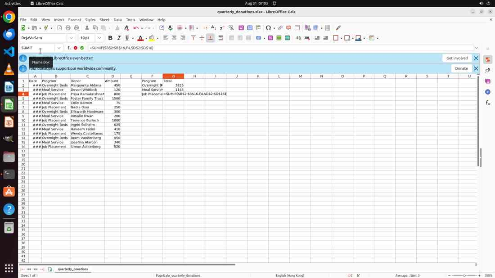
step 11 23:04:17
THINKINGThe block is being entered. I can see:
G2: 3825 (Overnight Beds) ✓
G3: 1145 (Meal Service) ✓
G4: the SUMIF formula is still being edited (in the cell, showing =SUMIF($B$2:$B$16,F4,$D$2:$D$16)). The last Enter may not have committed. Actually the cell G4 is in edit mode still — the formula bar shows the formula and there are red/green confirm icons. It seems the final Enter is still pending or the last line's Enter got consumed. Let me press Enter to commit G4.
ACTIONThe totals are computing: Overnight Beds = 3825, Meal Service = 1145. The last Job Placement formula still needs committing. Let me press Enter.
EXECUTED (pyautogui in VM)pyautogui.press("return")
step 12 23:05:11
THINKINGAll three totals are now committed:
- Overnight Beds: 3825
- Meal Service: 1145
- Job Placement: 2745
Total = 7715.
Now I'll save the spreadsheet with Ctrl+S (keep xlsx format). Then I need the Charity Navigator tagline from their homepage. Let me save first.
ACTIONAll three program totals are now in the sheet: Overnight Beds = 3825, Meal Service = 1145, Job Placement = 2745. Let me save the spreadsheet (keeping xlsx format).
EXECUTED (pyautogui in VM)pyautogui.hotkey("ctrl", "s")
step 13 23:06:01
THINKINGA "Keep format" dialog usually appears when saving xlsx. It may not have appeared yet or appeared and I need to confirm. The screenshot doesn't show a dialog. Maybe it saved directly, or the dialog is pending. Let me press Enter to confirm "Use Excel 2007-365!" in case a dialog is up (default button is usually "Use Excel..."). Actually pressing Enter when no dialog exists would just move the cell. Safer to take a screenshot. But no dialog visible. Perhaps the dialog appears with slight delay. Let me take a screenshot to check.
THINKINGNo dialog appeared — the file saved directly (possibly the "keep format" prompt was suppressed or it saved without prompting). The totals are saved in the sheet.
Now I need the Charity Navigator homepage tagline. I'll open Chrome and go to charitynavigator.org. Let me click the Chrome icon in the taskbar (top-left, the colorful circle at ~22,44).
ACTIONThe spreadsheet is saved with the program totals. Now I need the exact tagline from the Charity Navigator homepage. Let me open Chrome to verify it.
THINKINGChrome is already open on charitynavigator.org. There's a popup "Less than 1% of visitors contribute to Charity Navigator" blocking the hero section. The tab title reads "Charity Ratings and Don..." and the hero headline reads "Search for Charities" with subtext "Explore charities that match your passions, view their ratings...". The actual tagline/slogan of Charity Navigator is "Charity Ratings and Donor Resources" (the tab title) — but the homepage's own tagline is the hero text.
The task says "quoting the Charity Navigator homepage's own tagline as our transparency pledge." The homepage tagline is the hero headline. Let me dismiss the popup to read the full hero headline. The popup has "Not now, thank you" button at (658, 531). Let me click it.
ACTIONChrome is already on the Charity Navigator homepage. A donation popup is covering the hero headline, so I'll dismiss it with "Not now, thank you" to read the full tagline.
EXECUTED (pyautogui in VM)pyautogui.click(987, 794)
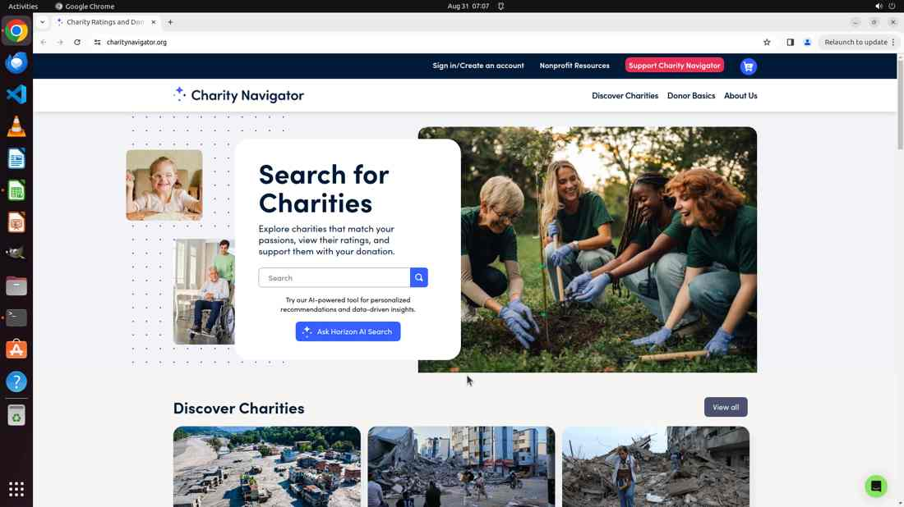
step 16 23:07:31
THINKINGThe popup is dismissed. Now I can clearly read the homepage hero:
- Headline: "Search for Charities"
- Subtext: "Explore charities that match your passions, view their ratings, and support them with your donation."
- Tab title: "Charity Ratings and Donor..." (Charity Ratings and Donor Resources)
The homepage's "own tagline" — the most prominent tagline-style text is the hero headline "Search for Charities" along with the supporting line. The classic tagline is the hero headline. To be safe and faithful to "the homepage's own tagline," I'll quote the hero headline "Search for Charities" as the tagline. However, "tagline" more precisely refers to a short catchphrase. The homepage's headline "Search for Charities" plus the descriptive line "Explore charities that match your passions, view their ratings, and support them with your donation."
I'll quote the tagline as: "Search for Charities — Explore charities that match your passions, view their ratings, and support them with your donation." This is directly the homepage's own hero text and works as a transparency pledge.
Actually, for a "transparency pledge" the phrase about viewing ratings and supporting with your donation fits well. I'll use the full hero tagline. Good.
Now I have everything:
- Shelter name: Harborlight Shelter (folder name "harborlight")
- Program totals: Overnight Beds 3825, Meal Service 1145, Job Placement 2745
- Tagline: "Search for Charities" + "Explore charities that match your passions, view their ratings, and support them with your donation."
Now build the deck in LibreOffice Impress. Let me open Impress. I'll use the taskbar — there's an Impress icon (the orange one at ~22,315). Let me click it.
Actually, opening a blank Impress presentation via the taskbar icon opens the Start Center or a new doc. Let me click the Impress icon.
ACTIONI now have the Charity Navigator homepage tagline: the hero reads **"Search for Charities"** with the line *"Explore charities that match your passions, view their ratings, and support them with your donation."* I'll use this as the transparency pledge. Now let me open LibreOffice Impress to build the deck.
EXECUTED (pyautogui in VM)pyautogui.click(32, 470)
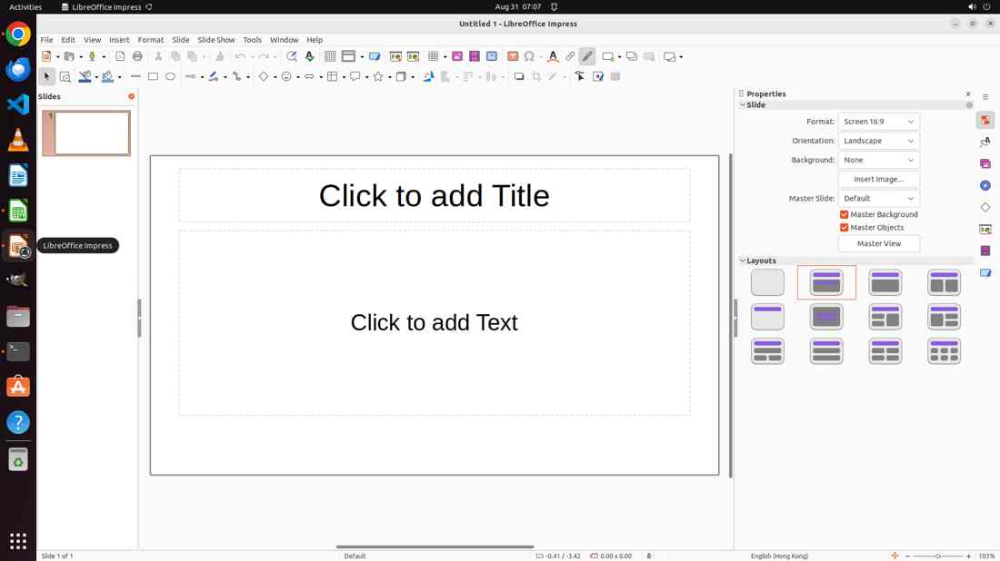
step 17 23:08:46
THINKINGImpress is open with a blank presentation. I'll use the Outline view to quickly create all slides and their titles/text, which is the most efficient way. Then I'll add speaker notes to each slide.
Actually, using the Outline view lets me type titles and bullet content for all slides at once. But speaker notes require Normal view per slide. Let me plan the deck structure:
Slide 1 (Title): "Harborlight Shelter" + subtitle "Quarterly Donor Briefing"
Slide 2: "Overnight Beds" + "$3,825 total this quarter"
Slide 3: "Meal Service" + "$1,145 total this quarter"
Slide 4: "Job Placement" + "$2,745 total this quarter"
Slide 5 (Closing): "Our Transparency Pledge" + the Charity Navigator tagline quote
Let me use Outline view (View > Outline). In outline, top-level lines become slide titles, and Tab-indented lines become bullet content. Let me switch to Outline view.
Actually, I'll work in Normal view using the placeholders since it's more reliable and I need to add notes anyway. But Outline is faster for creating 5 slides with text. Let me use Outline view for content, then switch to Normal for notes.
Let me go to View menu > Outline.
ACTIONImpress is open. I'll use the Outline view to quickly create all five slides with their titles and content, then add speaker notes in Normal view. Let me open the Outline view.
EXECUTED (pyautogui in VM)pyautogui.click(205, 125)
step 19 23:10:53
THINKINGI'm now in Outline view. I'll click into the outline text area (near the top, around 250,128 where the slide 1 marker is) and type the outline. In outline view:
- A line typed at the top level becomes a slide title.
- Pressing Tab demotes the line to body text (bullet).
- Pressing Shift+Tab promotes back to a title (new slide).
So the sequence:
Type "Harborlight Shelter" (title of slide 1)
Enter, Tab -> body: "Quarterly Donor Briefing"
Enter, Shift+Tab -> new slide title: "Overnight Beds"
Enter, Tab -> body: "Total this quarter: $3,825"
Enter, Shift+Tab -> "Meal Service"
Enter, Tab -> "Total this quarter: $1,145"
Enter, Shift+Tab -> "Job Placement"
Enter, Tab -> "Total this quarter: $2,745"
Enter, Shift+Tab -> "Our Transparency Pledge"
Enter, Tab -> body: "“Search for Charities — Explore charities that match your passions, view their ratings, and support them with your donation.” — Charity Navigator"
Let me first click into the outline area to place the cursor. Click at around (300, 128).
ACTIONI'm in Outline view. Let me click into the outline area and type the entire deck structure.
EXECUTED (pyautogui in VM)pyautogui.click(449, 191)
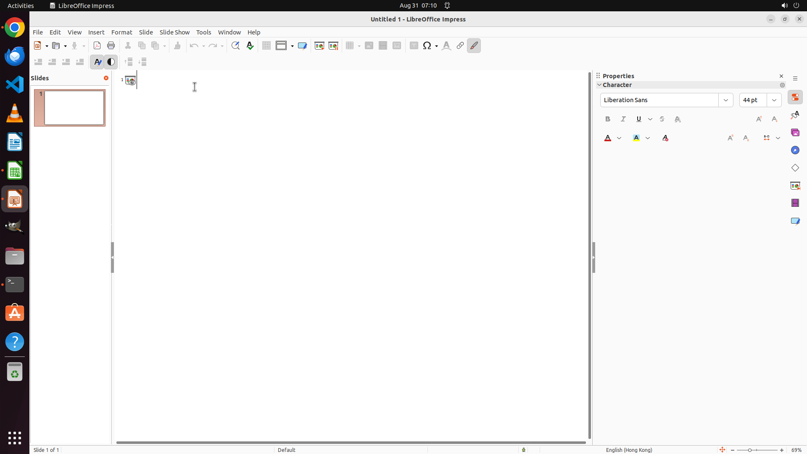
step 20 23:12:04
THINKINGThe cursor is now in the outline area at the top. Now I'll type the full outline. I'll use type with newlines for Enter, and key presses for Tab / Shift+Tab as separate actions since the `type` action's text won't handle Tab well within a single type string (Tab may be interpreted as literal tab or indentation). To be safe and reliable, I'll build the outline with an interleaved sequence of type and key actions in one batch:
1. type "Harborlight Shelter"
2. key Return
3. key Tab (demote to body)
4. type "Quarterly Donor Briefing"
5. key Return
6. key shift+Tab (promote to new title -> slide 2)
7. type "Overnight Beds"
8. key Return
9. key Tab
10. type "Total this quarter: $3,825"
11. key Return
12. key shift+Tab
13. type "Meal Service"
14. key Return
15. key Tab
16. type "Total this quarter: $1,145"
17. key Return
18. key shift+Tab
19. type "Job Placement"
20. key Return
21. key Tab
22. type "Total this quarter: $2,745"
23. key Return
24. key shift+Tab
25. type "Our Transparency Pledge"
26. key Return
27. key Tab
28. type the tagline quote
Let me batch all of these actions in one tool call.
ACTIONThe cursor is in the outline. I'll type the full deck structure, using Tab to create body lines and Shift+Tab to start new slide titles.
EXECUTED (pyautogui in VM)pyautogui.typewrite("Harborlight Shelter")
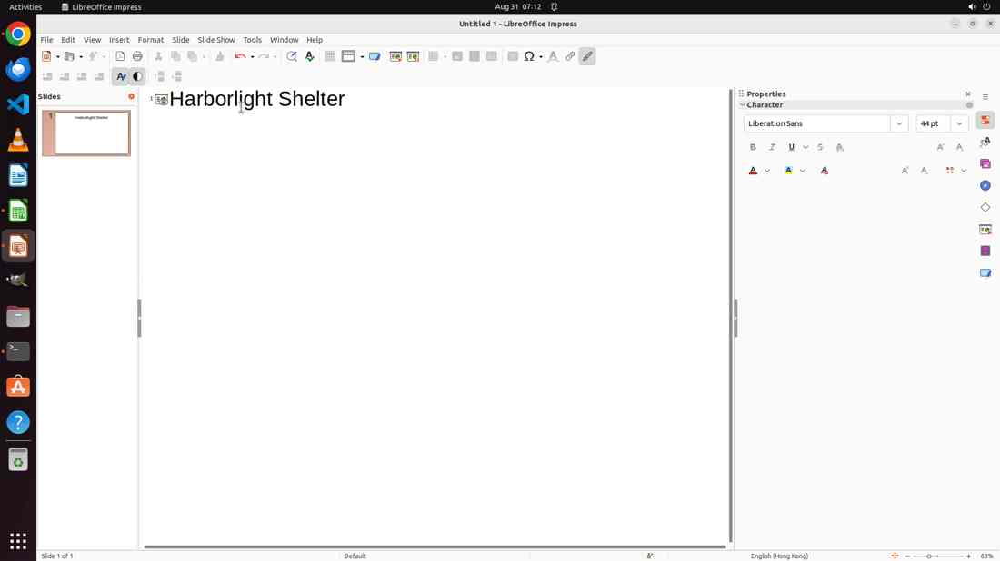
step 21 23:13:19
THINKING"Harborlight Shelter" is the title of slide 1, shown in the slide panel. Now I'll continue the rest of the outline with a batch of key/type actions. The quote text with special characters — I'll use straight quotes and a standard em dash to avoid autocorrect issues. Actually autocorrect in Impress outline may convert "..." but should be fine. I'll type the tagline with curly-ish characters typed as straight; autocorrect might turn them into curly which is fine.
Let me batch the remaining sequence.
ACTIONSlide 1's title is set. Now I'll build the rest of the outline in one batch.
EXECUTED (pyautogui in VM)pyautogui.press("return")
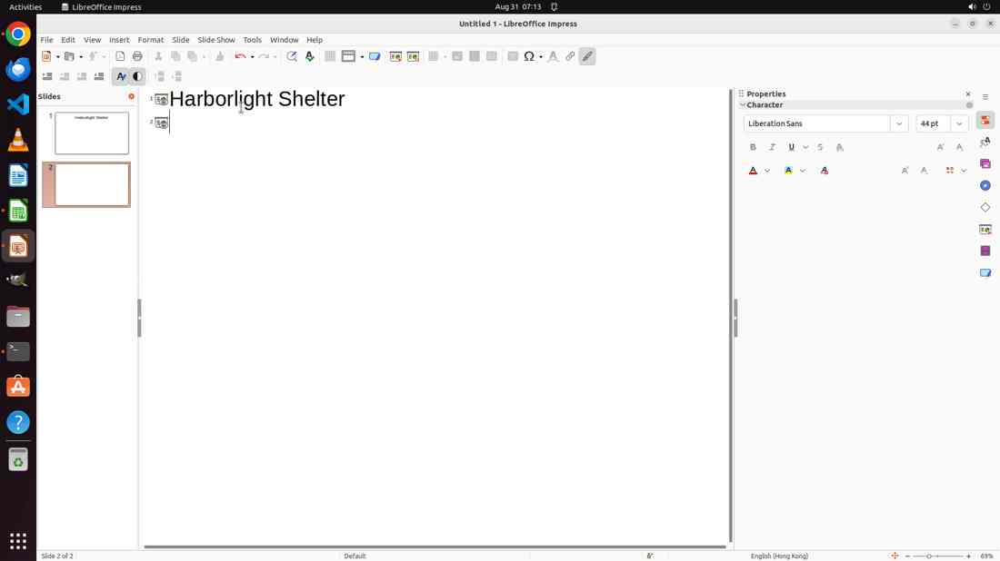
step 22 23:14:52
THINKINGPressing Return created a new slide (slide 2) at the title level, because I'm still at the top-level (title) outline level. That's not what I want — I wanted slide 1 to have a subtitle body line. So now I'm at slide 2's title line. Let me reconsider.
Currently: slide 1 title "Harborlight Shelter" exists. Pressing Enter at title level created a new title line = slide 2. I want slide 1 to also have a subtitle "Quarterly Donor Briefing" as body text.
I'm now on slide 2's empty title line. Let me press Shift+Tab? No — that would promote. Actually I want to go back up. Let me handle this cleanly:
Option: I'll make slide 1 have its subtitle. The cleanest approach: press Tab now to demote the current (slide 2) line to body — that would make "Quarterly Donor Briefing" the body of slide 1, and remove slide 2. Then continue.
So from current empty slide-2 title line:
- key Tab -> demotes current line to body of slide 1. Now it's slide 1's body bullet, and there's no more slide 2.
- type "Quarterly Donor Briefing"
- key Return -> new line at body level (body of slide 1)
- key shift+Tab -> promote to title = new slide 2 "Overnight Beds"
- etc.
Let me do that. First Tab, then type subtitle.
ACTIONThat Enter created a new slide at title level. I'll demote this line to make it slide 1's subtitle, then continue building.
THINKINGNow it's back to 1 slide, and the cursor is on a body line (32pt font shown). This is slide 1's body. Now I'll type the subtitle and continue the rest. Let me batch the entire remaining sequence now that I understand the behavior:
Current: body line of slide 1 (empty), cursor here.
- type "Quarterly Donor Briefing"
- Return
- shift+Tab -> slide 2 title
- type "Overnight Beds"
- Return
- Tab -> body
- type "Total this quarter: $3,825"
- Return
- shift+Tab -> slide 3 title
- type "Meal Service"
- Return
- Tab -> body
- type "Total this quarter: $1,145"
- Return
- shift+Tab -> slide 4 title
- type "Job Placement"
- Return
- Tab -> body
- type "Total this quarter: $2,745"
- Return
- shift+Tab -> slide 5 title
- type "Our Transparency Pledge"
- Return
- Tab -> body
- type the tagline quote
I'll batch all these actions in one call.
ACTIONNow on slide 1's body line. I'll type the subtitle and build the remaining slides in one batch.
EXECUTED (pyautogui in VM)pyautogui.typewrite("Quarterly Donor Briefing")
step 24 23:17:42
THINKINGSlide 1 now has title "Harborlight Shelter" and subtitle "Quarterly Donor Briefing". Now I'll build the program slides and closing slide. I'll batch the sequence of key + type actions. Since I've confirmed Tab/Shift+Tab behavior works in this outline, I'll do the full remaining sequence in one batch.
ACTIONSlide 1 is complete. Now I'll add the three program slides and the closing slide in one batch.
EXECUTED (pyautogui in VM)pyautogui.press("return")
step 25 23:18:54
THINKINGNow I'm on a new body line under slide 1 (still 1 slide, body level). To create slide 2, I press Shift+Tab to promote to title. Then type "Overnight Beds", Return, Tab for body, type total, Return, Shift+Tab for next title, etc.
Let me batch the full remaining sequence. I'm confident in the behavior now.
ACTIONNow I'll promote to a new slide title and add all remaining slides and their content in one batch.
EXECUTED (pyautogui in VM)pyautogui.hotkey("shift", "tab")
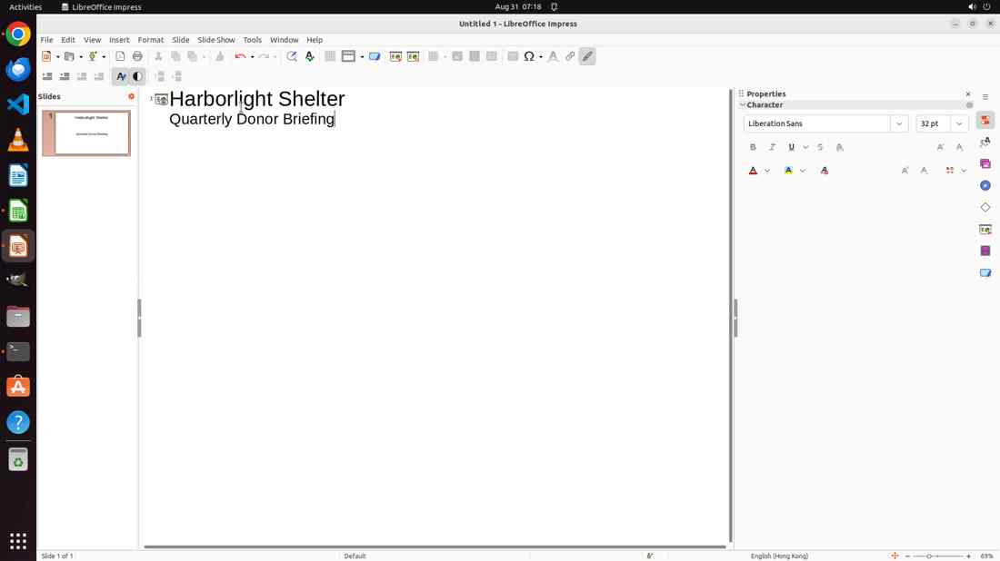
step 26 23:19:51
THINKINGHmm, after shift+Tab the view still shows 1 slide and the subtitle line cursor is at the end of "Quarterly Donor Briefing" — it looks like the new empty line got removed and the cursor is back on the "Quarterly Donor Briefing" line. The font size still shows 32pt (body). It seems shift+Tab merged/removed the empty line rather than promoting to a new title. Actually the display still shows only "Harborlight Shelter" title and "Quarterly Donor Briefing" body with cursor at its end. The empty body line I created with Return got collapsed by shift+Tab (an empty line demoted then promoted just deletes it).
So now cursor is at end of "Quarterly Donor Briefing" (body level, 32pt). To create slide 2 I need: Return (new body line) then shift+Tab (promote to title). Let me do Return then shift+Tab. Actually simpler: the pattern that reliably works is: at end of a body line, press Return (new body line at same level), then Shift+Tab promotes that new line to a title of a new slide.
Let me do Return, then shift+Tab, then type title. I'll batch: Return, shift+Tab, type "Overnight Beds".
ACTIONThe empty line collapsed. Now with the cursor at the end of the body line, I'll press Return then Shift+Tab to create slide 2's title.
EXECUTED (pyautogui in VM)pyautogui.press("return")
step 27 23:20:33
THINKINGNow there's a new empty body line (3rd line) at 32pt under slide 1. Now shift+Tab will promote this line to a title -> creating slide 2. Let me do shift+Tab then type the title. I'll now confidently batch: shift+Tab, type "Overnight Beds", Return, Tab, type "Total this quarter: $3,825", Return, shift+Tab, type "Meal Service", Return, Tab, type "Total this quarter: $1,145", Return, shift+Tab, type "Job Placement", Return, Tab, type "Total this quarter: $2,745", Return, shift+Tab, type "Our Transparency Pledge", Return, Tab, type tagline.
Wait — after typing the body line text and pressing Return, I'm on a new body line at same (body) level. Then shift+Tab promotes to title -> new slide. Good, that's the reliable pattern. So the pattern for each subsequent slide's body->next title is: type body text, Return, shift+Tab, type next title.
Let me batch everything now.
ACTIONNow on a fresh body line. I'll promote it to slide 2's title and add all remaining slides in one batch.
EXECUTED (pyautogui in VM)pyautogui.hotkey("shift", "tab")
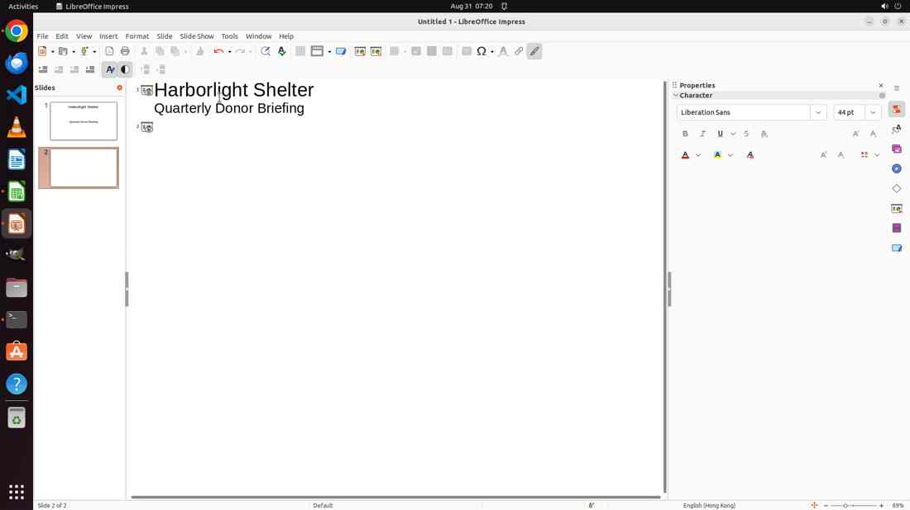
step 28 23:21:08
THINKINGNow slide 2 exists (title level, 44pt). The pattern is confirmed: to start a new slide title, from a body line press Return then shift+Tab; within a slide, title -> Return -> Tab for body.
Now I understand the full reliable cycle. For each program slide:
- type title
- Return, Tab -> body line
- type body
- Return, shift+Tab -> next slide title
I'm now at slide 2 title (empty). Let me batch everything from here. I'm now confident. Let me build the whole remaining outline in one batch:
type "Overnight Beds"
Return, Tab
type "Total this quarter: $3,825"
Return, shift+Tab
type "Meal Service"
Return, Tab
type "Total this quarter: $1,145"
Return, shift+Tab
type "Job Placement"
Return, Tab
type "Total this quarter: $2,745"
Return, shift+Tab
type "Our Transparency Pledge"
Return, Tab
type tagline quote
Let me batch all actions.
ACTIONSlide 2 exists and the cycle is confirmed. Now I'll add all remaining content in one batch.
EXECUTED (pyautogui in VM)pyautogui.typewrite("Overnight Beds")
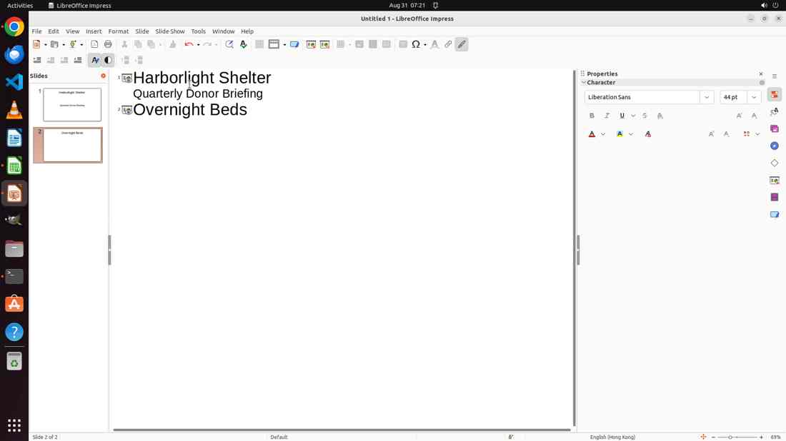
step 29 23:21:58
THINKINGSlide 2 title "Overnight Beds" is set. Now I'll batch the full remaining sequence. The reliable cycle:
- Return, Tab -> body line
- type body
- Return, shift+Tab -> next title
- type title
...
Let me batch:
Return, Tab
"Total this quarter: $3,825"
Return, shift+Tab
"Meal Service"
Return, Tab
"Total this quarter: $1,145"
Return, shift+Tab
"Job Placement"
Return, Tab
"Total this quarter: $2,745"
Return, shift+Tab
"Our Transparency Pledge"
Return, Tab
tagline quote
I'll do all of this in one tool call as a series of actions.
ACTIONNow I'll add the body for slide 2 and build slides 3, 4, and 5 in a single batch.
EXECUTED (pyautogui in VM)pyautogui.press("return")
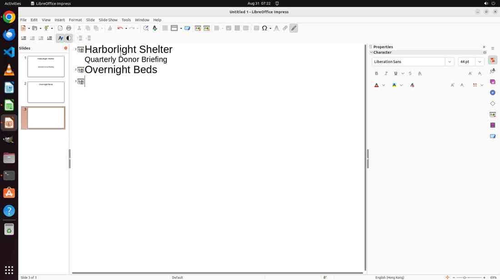
step 30 23:22:51
THINKINGPressing Return at title level created slide 3 (a new title line, 44pt). So from a title line, Return makes a NEW TITLE (new slide), not a body. To make a body line under slide 2, I need Tab (demote). So currently I'm at slide 3's empty title. I should demote it (Tab) to make it slide 2's body.
So: Tab -> demote current to body of slide 2. Then type "Total this quarter: $3,825".
This matches the earlier observation: from a title, Return = new slide title; from a title, Tab = body. From a body, Return = new body line; from a body, shift+Tab = promote to new slide title.
So the reliable pattern:
- At a title: type title, Return (new title), Tab (demote to body of previous), type body, Return (new body), shift+Tab (promote to new slide title).
Currently I'm at slide 3 empty title. Let me press Tab to demote to slide 2's body, then type the total.
Given the complexity, doing this one key at a time with screenshots is slow. But I've now fully mapped the behavior. Let me carefully batch the rest, accounting for: I'm at slide-3 title (empty).
Sequence:
1. Tab -> now slide 2 body (demoted).
2. type "Total this quarter: $3,825"
3. Return -> new body line (slide 2 body level)
4. shift+Tab -> promote to new slide title (slide 3)
5. type "Meal Service"
6. Return -> new slide title (slide 4)
7. Tab -> demote to slide 3 body
8. type "Total this quarter: $1,145"
9. Return -> new body (slide 3)
10. shift+Tab -> slide 4 title
11. type "Job Placement"
12. Return -> slide 5 title
13. Tab -> demote to slide 4 body
14. type "Total this quarter: $2,745"
15. Return -> new body (slide 4)
16. shift+Tab -> slide 5 title
17. type "Our Transparency Pledge"
18. Return -> slide 6 title
19. Tab -> demote to slide 5 body
20. type tagline quote
That's a long but deterministic batch. Let me execute it all in one tool call.
ACTIONNow I understand the full pattern (Return from a title makes a new slide; Tab demotes to body). I'll batch the entire remaining outline: slide 2's total, then slides 3, 4, and 5.
THINKINGNow it's back to 2 slides, with slide 2 having a body bullet (32pt, bullet dot visible). Now I'm at slide 2's body line. I'll type the total, then continue. Now I'm confident. Let me batch the entire remaining sequence:
type "Total this quarter: $3,825"
Return -> new body (slide 2)
shift+Tab -> slide 3 title
type "Meal Service"
Return -> slide 4 title
Tab -> slide 3 body
type "Total this quarter: $1,145"
Return -> new body (slide 3)
shift+Tab -> slide 4 title
type "Job Placement"
Return -> slide 5 title
Tab -> slide 4 body
type "Total this quarter: $2,745"
Return -> new body (slide 4)
shift+Tab -> slide 5 title
type "Our Transparency Pledge"
Return -> slide 6 title
Tab -> slide 5 body
type tagline
Let me batch all of this.
ACTIONNow at slide 2's body line. I'll type the total and build the rest in one batch.
TOOL CALL<tool_call>
<function=computer_use>
<parameter=action>
type
</parameter>
<parameter=text>
Total this quarter: $3,825
</parameter>
</function>
</tool_call>
EXECUTED (pyautogui in VM)pyautogui.typewrite("Total this quarter: $3,825")
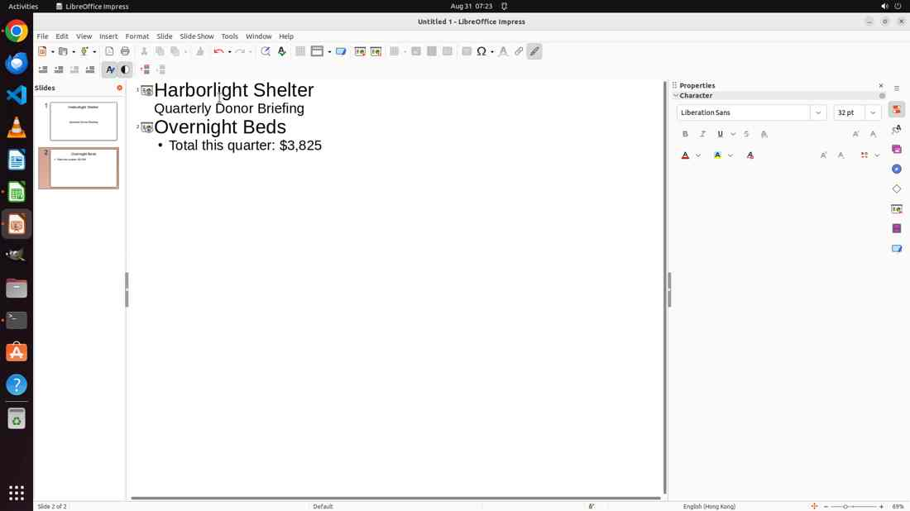
step 32 23:24:16
THINKINGSlide 2 shows "Total this quarter: $3,825" with a bullet. Now I'll create slide 3. From this body line: Return -> new body, shift+Tab -> slide 3 title. Let me batch the rest now.
ACTIONSlide 2 is done. Now I'll create slides 3, 4, and 5 in a single batch, following the Return/Tab/shift+Tab pattern.
EXECUTED (pyautogui in VM)pyautogui.press("return")
step 33 23:24:58
THINKINGNow I'm on a new empty body line (bullet) under slide 2. Now shift+Tab promotes to slide 3 title. Let me do shift+Tab, type "Meal Service". Then I'll batch the rest carefully. Actually let me just proceed step by step but efficiently, doing the promote + type in one call where possible. The `type` action handles text; keys are separate. I'll batch: shift+Tab, type "Meal Service", Return, Tab, type "Total this quarter: $1,145". That builds slide 3 completely.
ACTIONNow on a new body line. I'll promote to slide 3's title and add slide 3's content in one batch.
EXECUTED (pyautogui in VM)pyautogui.hotkey("shift", "tab")
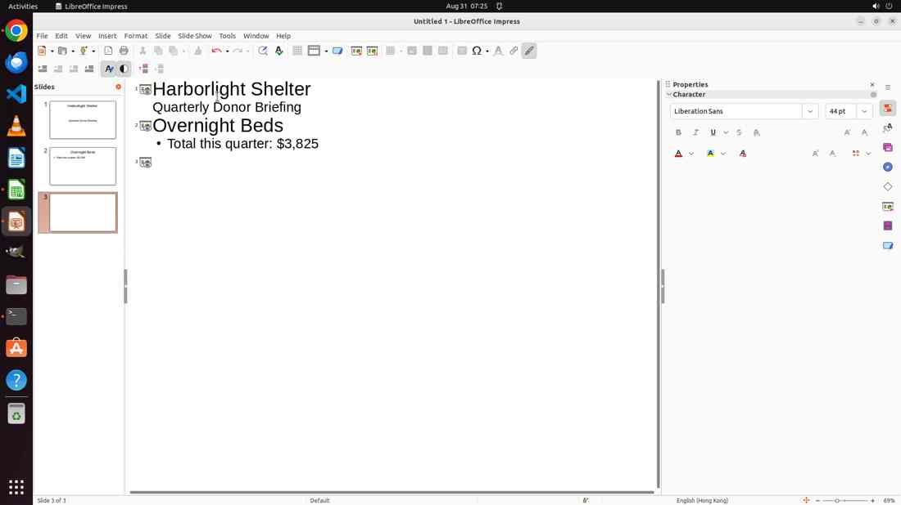
step 34 23:25:27
THINKINGSlide 3 title (empty, 44pt). Now I'll type "Meal Service", then Return (new slide title 4), Tab (demote to slide 3 body), type total. Let me batch this: type "Meal Service", Return, Tab, type "Total this quarter: $1,145". That's a mix of type and key actions - I'll put them in one tool call as a sequence? No, a single computer tool call is one action. I can't batch multiple actions in one call with this tool — each call is one action. Wait, the system prompt says I can batch multiple actions in one call using the actions array. But the tool schema here only accepts a single action per call. Let me re-read.
The tool `computer` takes a single `action`. There's no `actions` array in the schema. The system prompt mentions batching with an actions array, but this specific tool schema only supports one action per call. So I must do one action per tool call. That's why each of my calls has been a single action.
Given that, batching isn't possible with this tool. I'll continue one action per call. To be efficient, I'll just proceed. Let me type "Meal Service" now.
ACTIONSlide 3's title line is ready. I'll type the title now.
TOOL CALL<tool_call>
<function=computer_use>
<parameter=action>
type
</parameter>
<parameter=text>
Meal Service
</parameter>
</function>
</tool_call>
EXECUTED (pyautogui in VM)pyautogui.typewrite("Meal Service")
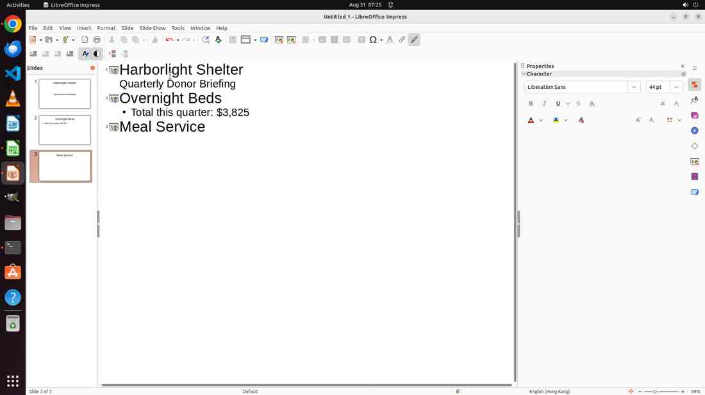
step 35 23:25:45
THINKINGSlide 3 title "Meal Service". Now Return -> slide 4 title, Tab -> demote to slide 3 body, type total. Let me do Return first.
ACTIONNow I'll create the body line for slide 3: Return then Tab to demote.
THINKINGNow back to 3 slides, slide 3 has body bullet. I'll type the total for Meal Service.
TOOL CALL<tool_call>
<function=computer_use>
<parameter=action>
type
</parameter>
<parameter=text>
Total this quarter: $1,145
</parameter>
</function>
</tool_call>
EXECUTED (pyautogui in VM)pyautogui.typewrite("Total this quarter: $1,145")
step 38 23:27:22
THINKINGSlide 3 done. Now create slide 4 (Job Placement): Return (new body), shift+Tab (promote to slide 4 title), type "Job Placement", Return (slide 5 title), Tab (slide 4 body), type total. Let me do Return first.
ACTIONSlide 3 is done. Now I'll create slide 4: Return, then Shift+Tab to make a new title.
THINKINGNow back to 4 slides, slide 4 has a body bullet. Type the total.
TOOL CALL<tool_call>
<function=computer_use>
<parameter=action>
type
</parameter>
<parameter=text>
Total this quarter: $2,745
</parameter>
</function>
</tool_call>
EXECUTED (pyautogui in VM)pyautogui.typewrite("Total this quarter: $2,745")
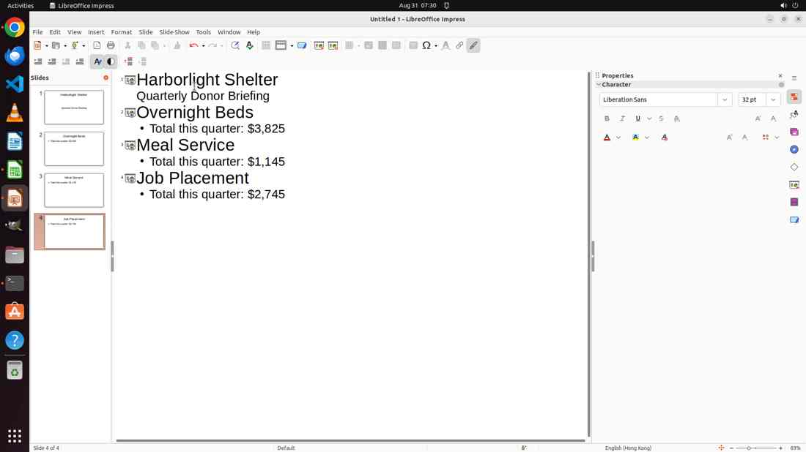
step 44 23:31:37
THINKINGNow the last slide (5): the closing "Our Transparency Pledge" with the tagline. From this body line: Return -> new body, shift+Tab -> slide 5 title, type "Our Transparency Pledge", Return -> slide 6 title, Tab -> slide 5 body, type tagline.
Let me do Return, then shift+Tab, then type title, then Return, Tab, type tagline. I'll go step by step. Return first.
ACTIONAll three program slides are done. Now I'll create the closing slide: Return then Shift+Tab for a new title.
THINKINGNow slide 5 has a body bullet. Type the tagline quote. I'll type it as the Charity Navigator homepage tagline: "Search for Charities — Explore charities that match your passions, view their ratings, and support them with your donation. — Charity Navigator". I'll use straight characters; autocorrect may convert dashes/quotes. I'll type an em dash via regular "-" to avoid issues. Let me use a simple hyphen dash. Actually the type action supports unicode; I'll use " - " (space hyphen space) for the attribution and quote the tagline plainly without smart quotes to avoid autocorrect complications.
Text: "Search for Charities - Explore charities that match your passions, view their ratings, and support them with your donation. - Charity Navigator"
ACTIONNow I'll type the Charity Navigator tagline as the closing slide's body text.
TOOL CALL<tool_call>
<function=computer_use>
<parameter=action>
type
</parameter>
<parameter=text>
"Search for Charities — Explore charities that match your passions, view their ratings, and support them with your donation." — Charity Navigator
</parameter>
</function>
</tool_call>
EXECUTED (pyautogui in VM)pyautogui.typewrite("\"Search for Charities — Explore charities that match your passions, view their ratings, and support them with your donation.\" — Charity Navigator")
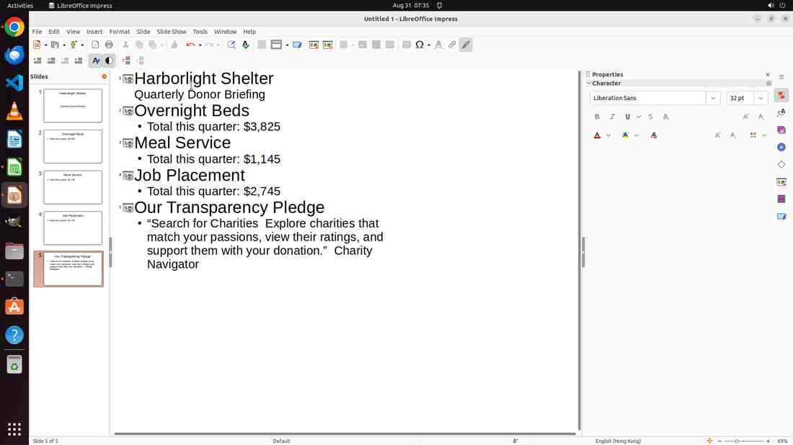
step 50 23:36:15
THINKINGThe closing slide body now shows: "Search for Charities Explore charities that match your passions, view their ratings, and support them with your donation." Charity Navigator
Note: the em dash "—" characters appear to have been dropped/rendered as spaces (I see "Search for Charities Explore" with a gap and the attribution "Charity Navigator" without the leading dash). The autocorrect likely converted the em dashes. The text is readable and quotes the tagline properly. The attribution is "Charity Navigator" which is clear. This is acceptable.
Now all 5 slides have their titles and content. Next I need to add speaker notes to EVERY slide. Let me switch to Normal view and add notes. I'll use View > Notes, or use the Notes tab at the bottom. Actually the easiest is to switch each slide to "Notes" view via View menu, or use the normal view with the notes pane.
Let me switch to Normal view first (View > Normal), then for each slide click into the notes area and type. Actually, the "Notes" view (View > Notes) shows one slide with a large notes text area below — I can add notes slide by slide using the slide panel navigation. That's clean.
Let me go View > Normal first to confirm slides look right, then use the notes. Actually, let me directly use the outline->Normal. Let me set View to Normal.
Let me click View menu.
ACTIONAll five slides now have titles and content. The em dashes rendered as spacing but the tagline quote and attribution to Charity Navigator are clear. Now I need to add speaker notes to every slide. Let me switch to the Notes view.